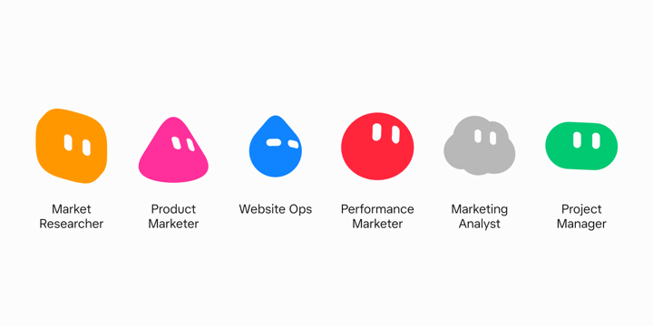
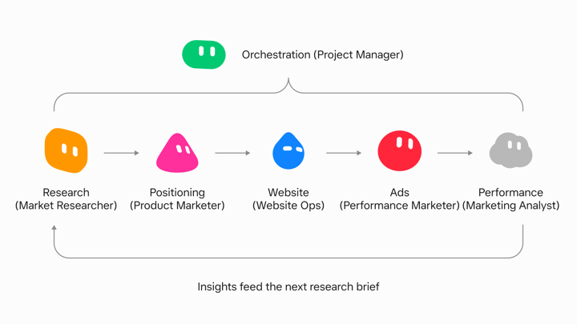

Official guides · 11/27
Grok Bot for Marketing
Six marketing bots that research competitors, draft positioning in Google Docs, build Google Ads shells, and open PRs on the marketing site.

I used to treat marketing AI like a clever intern that never left the chat window. Useful for brainstorming, terrible at finishing the job.
A few months ago I was still the one pushing every step: paste research into a Doc, rewrite the brief myself, chase someone for a web page, rebuild ad shells by hand, then stare at a spreadsheet hoping everything was right. Now I orchestrate a small team of Grok Bots through that loop. They draft, hand off, open PRs, and build campaign shells while I keep the judgment calls.
There are a lot of guides about using AI to automate social posts or write faster. I want to show you the six bots that really changed how I ship marketing work.
Meet the marketing bots

A marketing launch rarely lives in one person’s head. Research is one role. Positioning is another. Web, paid, and analysis are usually different people again. Keeping work moving across those jobs without losing context is always the most difficult part.
I staff that with six specialists:
Market Researcher studies product pages and competitors, names gaps, and writes the strategic read.
Product Marketer turns that research into positioning briefs, landing page outlines, and search ad variants in Google Docs.
Performance Marketer builds Google Ads campaign shells and traffics approved copy into them.
Website Ops takes a landing outline, writes the page with Cursor under the hood, and opens a PR on the marketing site.
Marketing Analyst pulls Google Ads data, writes a scoreboard, and recommends what to scale, cut, or test next. It does not change a live ad, bid, or budget.
Project Manager studies the other bots, runs handoffs, and is my single thread so I am not trafficking five specialist chats myself.
Each one has a job description. That is the point. A generalist chat that tries to do research, ads, and code in one thread gets bloated and forgets why you hired it.
X-Air, start to finish

X-Air is a fictional long-haul airline. I use it here as a standalone example of the full loop, from research through a page, ads, and an analyst read.
I pointed Market Researcher at the X-Air site and a competitor set. It opened its own browser, read the pages, and came back with a concrete gap between the competitors: lean on useful time in the air, not luxury for its own sake. That is the kind of output a marketer can use, and it is specific enough for Product Marketer to work from.
Product Marketer got the next ask. In the background it messaged Market Researcher for context, then drafted a positioning brief in Google Docs with one-liners, value statements, and how the idea should show up across a few surfaces. I reviewed the Doc the way I review a teammate’s draft. I left a comment on a line that worked and told the bot to lean into that direction. The next pass updated the brief, outlined the landing page, and drafted Google Search variants for messaging tests.
I leave feedback in Docs, the bot revises, and I still own the judgment layer. Early on I tell one bot to talk to another. It tells me what it is doing, then does it. Once the handoffs settle, I spend less time on orchestration and more time on the decisions that matter.
Pages, ads, analyst
Performance Marketer took the approved copy and built Google Ads shells aimed at clicks for messaging tests. It is hooked into the Ads account, so the shell is real structure, not a mock spreadsheet I have to rebuild later.
Website Ops took the landing outline, wrote the page with Cursor, and opened a PR on the marketing site through GitHub (a site for storing and sharing code). I get screenshots while it works. After merge I open the live page instead of arguing about a mock that never shipped.
Marketing Analyst later pulled recent messaging experiment data from Google Ads and handed me a scoreboard by concept. It returned spend, CTR, CVR, CPA, and ROAS, then a short recommendation. The decision to scale, cut, test, or look closer stays my call. The bot recommends and I approve what spends.
The bots work in the same tools I do. Google Docs, Google Ads, the site repo, and a browser when a live website needs to be read. They message each other for context so I am not pasting research from one chat into another.
The handoff tax
Running the loop by hand works. You still pay a tax moving context between specialist bots and checking five threads. That tax is what Project Manager eats.
It learns the specialist seats, pushes handoffs, and surfaces screenshots and blockers to me. I stay on decisions. It stays on coordination. When I only have one specialist spinning up, I do not bother with Project Manager yet. Once the handoffs are real, I want one front door.
Templates, permissions, memory
When a seat is working, I use Share as Template (a ready-made setup you can copy). That snapshot is a recipe another person can add. It is not a meal. It does not carry the computer, the logins, or the chat history. People keep expecting a clone of my whole setup. They get the operating style I injected. The rest they connect themselves.
I start permissions small. Doc rewrites and Slack (a work chat app) draft replies before anyone gets ads write or prod. Trust comes from delivered work, not from handing over the company credit card on day one.
I also keep permanent roles so memory compounds. For a short initiative I put the right bots in a group chat instead of inventing a new persona every campaign. The seats stay. The campaign changes.
So what does this change?
Mental load, mostly. The bots finish jobs in Docs, Ads, Slack, and the site repo. I still approve what leaves the building and what hits a live account. A teammate finishes the grind in the tools. A chatbot answers in the thread and stops.
Stand up one specialist for one job. Connect only the tools that job needs. Template it when the seat is stable. Add Project Manager after the handoffs hurt, not before.
Try one bot on one marketing job this week. Get started here.
Written by Josh Kim
Source: https://x.ai/bot/guides/grok-bot-for-marketing
← Grok Bot for Legal Ops Grok Bot for mobile app development →